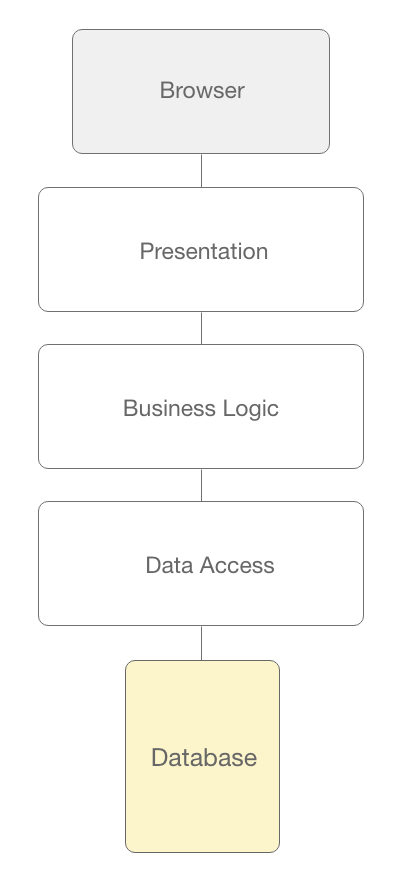
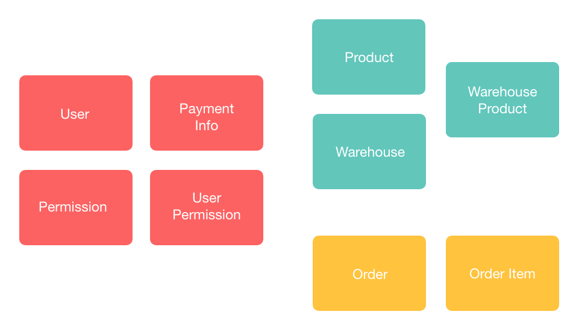

Few developers dispute the fact that high coupling is a bad thing, yet achieving the opposite is easier said than done. When writing code, if a component depends on another component, they are said to be coupled, which is part of everyday development, so it’s impossible to eliminate coupling altogether. What we should be striving for is low-coupling. The term spaghetti code gets thrown around quite a bit, and the reason for that is highly entangled codebases have very long and complicated dependency chains. A developer might want to make changes on component A, only to realize that those changes that mean changing component B, which in turn leads to changing component C, etc., and it’s not uncommon for teams to rewrite the app from scratch. So what’s the opposite of spaghetti code? It’s lasagna code, which we’ll get to in a moment.
As a general rule, we want to avoid two-way dependencies between components or functions. Pure functions are a perfect example of the right way to structure your code. They don’t have any side effects (like mutating arguments or the global state), nor do they have any knowledge of the context from where they’re being called (other than their parameters), which is excellent because it makes them reusable. Here’s an example of this rule being broken and why that’s bad:
function getFullName(person) {
if (!person.firstName) {
alert('Person first name missing.')
}
if (!person.lastName) {
alert('Person last name missing.')
}
return `${person.firstName} ${person.lastName}`
}You never want to do something like this because you want the calling code to choose how it handles the error.
Lasagna Code
This concept naturally leads to hierarchical code where callers and parent components depend on callees and child components, but not vice-versa. An example of that would be the typical web application layered architecture, where we have a presentation layer, a business logic layer, and a database layer, sitting on top of each other in that order.
The database layer shouldn’t have any knowledge of complicated business flows, and the business layer shouldn’t know about how it’s being rendered. And it most certainly shouldn’t trigger redirects in the application, which is an anti-pattern that’s unfortunately encountered quite often. This essentially boils down to another architectural idea: the single responsibility principle. As an example, a piece of code that updates a record should only be concerned about updating that record and its children alone. It shouldn’t trigger mutations in other parts of the global state because that would break encapsulation and increase coupling.
So what’s the key takeaway here? If we want a robust and decoupled architecture, we need to start at the base of the pyramid, which is the domain model and the rules around it. That’s where DDD comes in.
While the term domain driven design gets thrown around quite a bit, if you ask five different developers what they understand by DDD, you are most likely going to get five different answers. To make matters worse, even Eric Evan’s book which is the canonical authority on all things DDD doesn’t give an exact definition, so the term DDD is used quite loosely.
A thorough understanding of the business is undoubtedly necessary for all parties involved, but it’s worth also highlighting that people in different roles are interested in different things. For example:
- The company as a whole must make a profit so it needs to solve certain business needs for existing and potential new customers.
- Developers are usually more interested in the technology itself, don’t particularly like being in long meetings to clarify the requirements, and would like to work with the newest technology stacks available.
- Designers are highly creative and keen to showcase their skills with eye catching designs, which might take priority over business value.
At its core, DDD is a recipe for doing software development that attempts to bridge this disconnect. One way to think about DDD is that it is a top-down way of looking at the development process, in the sense that we define and codify the business requirements first and then we build on top of that.
DDD In Action
Let us imagine the following scenario — the team is tasked with creating creating a simple e-commerce site that sales sporting apparel. DDD mandates that before we choose what technology we build the application in, whether we choose a microservice approach and before we design the UX and UI, we define the exact business objects and processes.
We can identify some domain entities from the start — users need to log in so we’ll have a User object, and we also need multiple types of users (for example, an admin and a regular customer), so we will also have a Permission object. Of course, we need to have a catalog of products that we’re going to sell, so we will define a Product object, and these products have to be kept in stock so we’ll have Warehouse and WarehouseProduct entries. And last but not least, as this is the whole purpose of the app, Order, OrderItem and PaymentInfo for accepting orders and processing payments.
If we want to fill in the object fields and relations, we can use a database modeling tool. And while domain experts aren’t interested in things like databases (SQL vs. NoSQL, whether we use microservices or not, etc., and other implementation details), sketching tools like that can come in handy when designing the domain model.
What we have so far is called model driven architecture. DDD counts as MDA, but not viceversa, because DDD is a bit more prescriptive and it introduces additional concepts:
- Entities are the foundation of our domain model.
- Aggregates are collections of entities that can be treated as atomic entities.
- Services allow us to attach functionality to the model.
- Bounded contexts are relatively isolated groupings of entities, aggregates and services.
- Domain events flag moments when changes in the state of your domain occur.
- Commands are triggered by domain events and act on entities or aggregates.
Bounded context make for good candidates for individual microservices but they don’t have to be. Remember, we are using DDD to inform our technical decisions, not the other way around.
Communicating Domain Knowledge
But even if the whole team agrees that it’s important to start by defining the domain model and business rules, the question still is how to best go about it. Luckily, we have two very potent tools on our hands.
- Ubiquitous language
- Event storming
Eric Evans defines ubiquitous language as “the practice of building up a common, rigorous language between developers and users”. Rigorous here means always refering to entities consistently, so Account isn’t interchangabe with User.
Event storming, on the other hand, is the brainchild of Alberto Brandolini, and it’s essentially a way for the team members to communicate ideas using sticky notes and a whiteboard. It’s not a replacement for a requirements document or architecture diagram, but merely a way for the domain experts and developers to get together, agree on the requirements, and help define them.
- Identify the domain events and write them on orange sticky notes.
- For each domain event, find the command that caused it. Commands are written on blue notes and placed directly before the corresponding domain event.
- Identify the aggregates on which the commands are executed. The aggregates are written in yellow stickies.
Putting It All Together
Once we have an understanding of the business rules, we can define the database model, which in most cases, would map entities to tables directly. The business logic layer would contain the services – which must talk to the database layer or other services, but as previously mentioned, must be presentation agnostic. Commands don’t need to be implemented in code unless we’re going with a CQRS approach. Also, keep in mind that adding a messaging system in the form of an enterprise service bus to handle events can make your application significantly harder to debug so unless absolutely necessary, “events” should refer to user actions in the UI.
This ultimately leads us to the user-facing part of the application: the interface. A common challenge encountered in software development (when building a minimum viable product for investors, for example) is time-pressure, which causes developers to skip domain modeling / architecting and start directly from the UI layer and work their way down because they want to deliver something fast. It is like starting to build a house and saying you’re going to take care of the foundation later because you are expecting guests soon, and that part is not visible. This manifests itself as methods such as SubmitRecordForm instead of the more generic (and reusable) UpdateRecord. So when other developers need to update records from different contexts, they find that they cannot reuse the existing method and end up writing their own implementations.
Unfortunately, highly coupled code-bases also have a lot of duplicate code because of this.
A robust architecture allows the UI to vary independently from the business domain, which means a distinction between view models and domain models must be made, but as a rule of thumb, the domain model is the single source of truth. Patterns like MVVM from UI frameworks that support data binding (or simply transforming your domain model in the render() function if you’re using React) can be helpful.